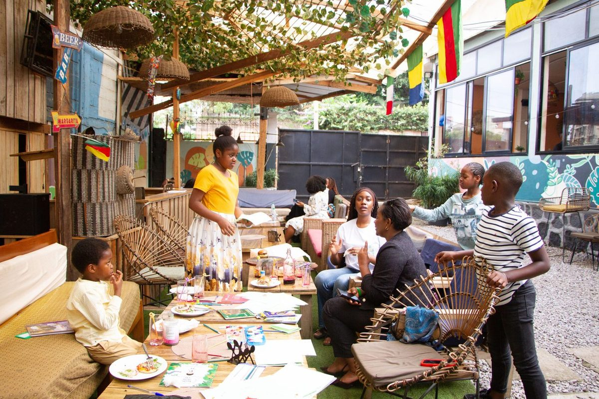
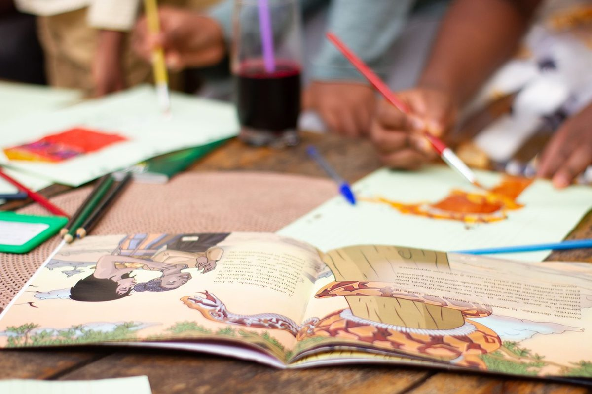

Une conviction, un lieu, et beaucoup d'enfants qui lisent.
D'où vient BookSeed, et pourquoi la lecture reste pour nous l'un des leviers les plus concrets de l'avenir.

« Partout dans le monde, l'éducation reste le terrain sur lequel se joue l'avenir d'un enfant, et celui d'un pays. Chez BookSeed, nous croyons qu'un enfant qui se reconnaît dans ce qu'il lit devient un enfant qui aime lire, et qu'un enfant qui connaît ses propres traditions les porte plus loin. C'est cette conviction, éduquer sans déraciner, que nous avons appelée l'Éducation Proxime. »
« Le goût de la lecture se construit dès l'enfance, et il change tout. Avec ma mère, nous construisons le Kfé Littéraire comme le lieu où cette idée peut grandir, tranquillement. »
L'Éducation Proxime, en pratique.
Le principe tient en une phrase : partir du proche pour aller vers le lointain. La langue de l'enfant, ses récits, ses images familières deviennent le point d'appui à partir duquel il accède au reste du monde. Jamais l'un contre l'autre.
Concrètement, cela change le choix des albums, la façon de poser les questions, les prénoms des personnages, les paysages sur les couvertures. Un enfant qui se voit dans un livre n'a plus besoin qu'on le convainque de le lire.
Des animatrices et des enseignants, pas des prestataires.
Chaque séance est conduite par une équipe pédagogique formée, qui connaît les enfants par leur prénom et suit leur progression d'une séance à l'autre.

Des groupes volontairement petits
Pour que chaque enfant lise, écrive et prenne la parole à chaque séance, et pas seulement les plus à l'aise.
Trois groupes de progression
Graines, Explorateurs et Bâtisseurs, constitués selon l'âge et le niveau réel de lecture et d'écriture.
Des supports bilingues
Conçus pour nos ateliers et pour les écoles partenaires, adaptés à chaque tranche d'âge.
Deux villes
Douala et Yaoundé, dans les écoles partenaires comme au Kfé Littéraire.
Un lieu en construction, déjà bien vivant.
Le Kfé Littéraire est notre café littéraire à Douala, co-fondé par Tamara et sa mère. Il est aujourd'hui en travaux de rénovation. Il accueillera bientôt, dans un même lieu, les ateliers BookSeed et un espace de lecture ouvert à toutes les familles.
En attendant, il continue d'accueillir nos séances : les photographies de cette page y ont toutes été prises.
Nos ateliers, sans mise en scène.
Toutes ces photographies ont été prises pendant nos séances, au Kfé Littéraire. Cliquez pour les agrandir.


Nous publions régulièrement de nouvelles séances sur @bookseedlearning.
Venez nous voir, ou écrivez-nous.
Que vous soyez une famille, une école ou une entreprise, la porte est ouverte. Nous répondons sous 48 heures.
- Téléphone et WhatsApp
- +237 691 17 80 46
- Le Kfé Littéraire
- Akwa Nord, Douala
en face de Santa Lucia - @bookseedlearning
Une graine, une histoire, un avenir.
Inscrivez un enfant, ou construisez avec nous un programme éducatif à la hauteur de votre engagement.